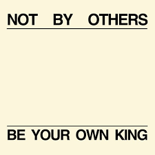
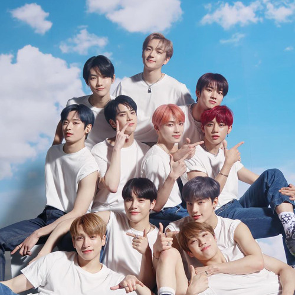

BE YOUR OWN KING

THE BOYZ 2021.4.15 公式YouTubeチャンネル 電撃公開した!
- MAKE YOUR OWN AIR ヒョンジェ
- 自分の空気を作る
- MAKE YOUR OWN CHARACTER ジュヨン
- 自分のキャラクターを作る
- MAKE YOUR OWN STAGE キュー
- 自分のステージを作る
- MAKE YOUR OWN ROMANCE チュ ハンニョン
- 自分のロマンスを作る
- MAKE YOUR OWN FANTASY ケビン
- 自分のファンタジーを作る
- MAKE YOUR OWN VIBE ソヌ
- 自分のバイブを作る
- MAKE YOUR OWN GLORY サンヨン
- 自分の栄光を作る
- MAKE YOUR OWN STEREOTYPE ニュー
- 自分だけのステレオタイプを作る
- MAKE YOUR OWN CLASSIC ヨンフン
- 自分のクラシックを作る
- MAKE YOUR OWN FREEDOM ジェイコブ
- 自分の自由を作る
- MAKE YOUR OWN PRIDE エリック
- 自分の誇りを作る
GENERATION Z

THE BOYZは13日午前0時、公式YouTubeチャンネルなどを通じて、メンバーたちの個性あふれるキャラクターと率直さを盛り込んだアイデンティティフィルム「GENERATION Z」を公開した。
Member’s POINT
もっと魅力的
各メンバーのあまり知られていない魅力が映像で紹介されています。
| メンバー | 魅力的な一言 |
| サンヨン | Simple is SANGYEON |
| ジェイコブ | WANNA BE ANGRY,JACOB? |
| ヨンフン | JEALOUSY MAKES YOUNGHOON ICY |
| ヒョンジェ | SASSY HYUNJAE SPEAKS OUT |
| サンヨン | Simple is SANGYEON |
| ジュヨン | JUYEON IS NOT SUCH A GOOD BOY |
| ケビン | WE NEED TO TALK ABOUT KEVIN |
| ニュー | ...DON'T GET MOODY NEW WRONG! |
| キュー | WHY CAN'T Q BE DEPRESSED? |
| ハンニョン | HAKNYEON'S CONFIDENCE ALWAYS GOES BIG |
| ソヌ | SUNWOO ain't down with inferiority |
| エリック | SOMETIMES ERIC IS SENSITIVE |
THE BOYZ 紹介
THE BOYZ JAPAN 公式ページ
興味があるのメンバー:
どちらが好きですか：
SLOGAN